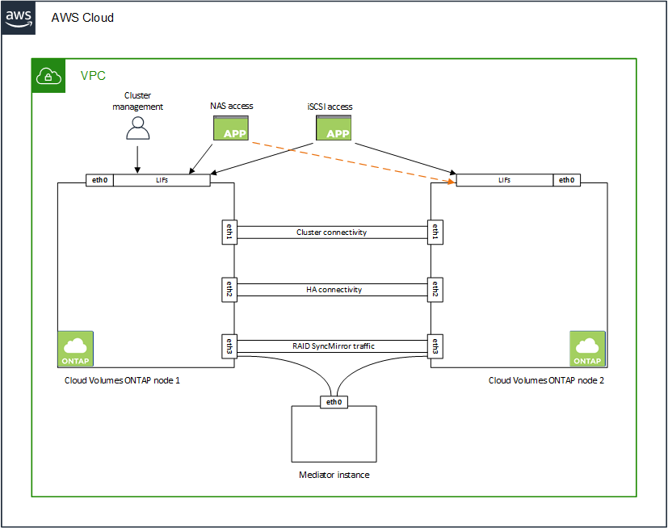

Notas de la versión
Notas de la versión
Requisitos de red para Cloud Volumes ONTAP en AWS
 Sugerir cambios
Sugerir cambios
BlueXP gestiona la configuración de componentes de red para Cloud Volumes ONTAP, como direcciones IP, máscaras de red y rutas. Debe asegurarse de que el acceso saliente a Internet está disponible, de que hay suficientes direcciones IP privadas disponibles, de que las conexiones correctas están en su lugar, y mucho más.
Requisitos generales
Los siguientes requisitos deben satisfacerse en AWS.
Acceso a Internet saliente para nodos Cloud Volumes ONTAP
Los nodos Cloud Volumes ONTAP requieren acceso a Internet de salida para AutoSupport de NetApp, que supervisa de forma proactiva el estado del sistema y envía mensajes al soporte técnico de NetApp.
Las políticas de enrutamiento y firewall deben permitir el tráfico HTTP/HTTPS a los siguientes extremos para que Cloud Volumes ONTAP pueda enviar mensajes de AutoSupport:
-
https://support.netapp.com/aods/asupmessage
-
https://support.netapp.com/asupprod/post/1.0/postAsup
Si tiene una instancia NAT, debe definir una regla de grupo de seguridad entrante que permita el tráfico HTTPS desde la subred privada hasta Internet.
Si una conexión a Internet saliente no está disponible para enviar mensajes AutoSupport, BlueXP configura automáticamente sus sistemas Cloud Volumes ONTAP para utilizar el conector como servidor proxy. El único requisito es asegurarse de que el grupo de seguridad del conector permita conexiones entrante a través del puerto 3128. Tendrá que abrir este puerto después de desplegar el conector.
Si ha definido reglas de salida estrictas para Cloud Volumes ONTAP, también tendrá que asegurarse de que el grupo de seguridad Cloud Volumes ONTAP permita conexiones saliente a través del puerto 3128.
Una vez que haya comprobado que el acceso saliente a Internet está disponible, puede probar AutoSupport para asegurarse de que puede enviar mensajes. Para obtener instrucciones, consulte "Documentos de ONTAP: Configure AutoSupport".
Si BlueXP notifica que los mensajes de AutoSupport no se pueden enviar, "Solucione problemas de configuración de AutoSupport".
Acceso saliente a Internet para el mediador de alta disponibilidad
La instancia del mediador de alta disponibilidad debe tener una conexión saliente al servicio EC2 de AWS para que pueda ayudar a recuperarse de la recuperación tras fallos del almacenamiento. Para proporcionar la conexión, puede agregar una dirección IP pública, especificar un servidor proxy o utilizar una opción manual.
La opción manual puede ser una puerta de enlace NAT o un extremo de la interfaz VPC desde la subred de destino al servicio AWS EC2. Para obtener más detalles sobre los extremos VPC, consulte "Documentación de AWS: Extremos de VPC de la interfaz (AWS PrivateLink)".
Direcciones IP privadas
BlueXP asigna automáticamente el número requerido de direcciones IP privadas a Cloud Volumes ONTAP. Debe asegurarse de que las redes tengan suficientes direcciones IP privadas disponibles.
El número de LIF que BlueXP asigna a Cloud Volumes ONTAP depende de si pone en marcha un sistema de nodo único o un par de alta disponibilidad. Una LIF es una dirección IP asociada con un puerto físico.
Direcciones IP para un sistema de nodo único
BlueXP asigna 6 direcciones IP a un sistema de un solo nodo.
La tabla siguiente proporciona detalles acerca de las LIF asociadas con cada dirección IP privada.
| LUN | Específico |
|---|---|
Gestión de clústeres |
Gestión administrativa de todo el clúster (pareja de alta disponibilidad). |
Gestión de nodos |
La gestión administrativa de un nodo. |
Interconexión de clústeres |
Comunicación entre clústeres, backup y replicación. |
Datos de NAS |
Acceso de clientes a través de protocolos NAS. |
Datos de iSCSI |
Acceso de cliente a través del protocolo iSCSI. También lo utiliza el sistema para otros flujos de trabajo de red importantes. Este LIF es necesario y no debe eliminarse. |
Gestión de máquinas virtuales de almacenamiento |
Una LIF de gestión de máquinas virtuales de almacenamiento se utiliza con herramientas de gestión como SnapCenter. |
Direcciones IP para pares de alta disponibilidad
Los pares de ALTA DISPONIBILIDAD requieren más direcciones IP que un sistema de nodo único. Estas direcciones IP se distribuyen entre interfaces ethernet diferentes, como se muestra en la siguiente imagen:

El número de direcciones IP privadas necesarias para un par de alta disponibilidad depende del modelo de puesta en marcha que elija. Un par de alta disponibilidad implementado en una zona de disponibilidad de AWS (AZ) single requiere 15 direcciones IP privadas, mientras que un par de alta disponibilidad implementado en Multiple AZs requiere 13 direcciones IP privadas.
En las tablas siguientes se ofrecen detalles acerca de las LIF asociadas con cada dirección IP privada.
LIF para pares de alta disponibilidad en un único AZ
| LUN | Interfaz | Nodo | Específico |
|---|---|---|---|
Gestión de clústeres |
eth0 |
nodo 1 |
Gestión administrativa de todo el clúster (pareja de alta disponibilidad). |
Gestión de nodos |
eth0 |
nodo 1 y nodo 2 |
La gestión administrativa de un nodo. |
Interconexión de clústeres |
eth0 |
nodo 1 y nodo 2 |
Comunicación entre clústeres, backup y replicación. |
Datos de NAS |
eth0 |
nodo 1 |
Acceso de clientes a través de protocolos NAS. |
Datos de iSCSI |
eth0 |
nodo 1 y nodo 2 |
Acceso de cliente a través del protocolo iSCSI. También lo utiliza el sistema para otros flujos de trabajo de red importantes. Estos LIF son necesarios y no deben eliminarse. |
Conectividad del clúster |
eth1 |
nodo 1 y nodo 2 |
Permite que los nodos se comuniquen entre sí y que muevan datos dentro del clúster. |
Conectividad de alta DISPONIBILIDAD |
eth2 |
nodo 1 y nodo 2 |
Comunicación entre los dos nodos en caso de conmutación al nodo de respaldo. |
Tráfico iSCSI de RSM |
eth3 |
nodo 1 y nodo 2 |
Tráfico iSCSI de RAID SyncMirror, así como comunicación entre los dos nodos de Cloud Volumes ONTAP y el mediador. |
Mediador |
eth0 |
Mediador |
Un canal de comunicación entre los nodos y el mediador para ayudarle a tomar la toma de control y los procesos de devolución del almacenamiento. |
LIF para pares de alta disponibilidad en múltiples AZs
| LUN | Interfaz | Nodo | Específico |
|---|---|---|---|
Gestión de nodos |
eth0 |
nodo 1 y nodo 2 |
La gestión administrativa de un nodo. |
Interconexión de clústeres |
eth0 |
nodo 1 y nodo 2 |
Comunicación entre clústeres, backup y replicación. |
Datos de iSCSI |
eth0 |
nodo 1 y nodo 2 |
Acceso de cliente a través del protocolo iSCSI. |
Conectividad del clúster |
eth1 |
nodo 1 y nodo 2 |
Permite que los nodos se comuniquen entre sí y que muevan datos dentro del clúster. |
Conectividad de alta DISPONIBILIDAD |
eth2 |
nodo 1 y nodo 2 |
Comunicación entre los dos nodos en caso de conmutación al nodo de respaldo. |
Tráfico iSCSI de RSM |
eth3 |
nodo 1 y nodo 2 |
Tráfico iSCSI de RAID SyncMirror, así como comunicación entre los dos nodos de Cloud Volumes ONTAP y el mediador. |
Mediador |
eth0 |
Mediador |
Un canal de comunicación entre los nodos y el mediador para ayudarle a tomar la toma de control y los procesos de devolución del almacenamiento. |

|
Cuando se implementan en varias zonas de disponibilidad, hay varias LIF asociadas con "Direcciones IP flotantes", Que no cuentan con el límite de IP privada de AWS. |
Grupos de seguridad
No necesita crear grupos de seguridad porque BlueXP lo hace por usted. Si necesita utilizar el suyo propio, consulte "Reglas de grupo de seguridad".
|
|
¿Busca información sobre el conector? "Ver reglas de grupo de seguridad para el conector" |
Conexión para la organización en niveles de datos
Si desea usar EBS como nivel de rendimiento y AWS S3 como nivel de capacidad, debe asegurarse de que Cloud Volumes ONTAP tenga una conexión con S3. La mejor forma de proporcionar esa conexión es crear un extremo de VPC con el servicio S3. Para ver instrucciones, consulte "Documentación de AWS: Crear un extremo de puerta de enlace".
Al crear el extremo VPC, asegúrese de seleccionar la región, VPC y tabla de rutas que correspondan a la instancia de Cloud Volumes ONTAP. También debe modificar el grupo de seguridad para añadir una regla de HTTPS de salida que habilite el tráfico hacia el extremo de S3. De lo contrario, Cloud Volumes ONTAP no puede conectarse con el servicio S3.
Si experimenta algún problema, consulte "Centro de conocimientos de soporte de AWS: ¿por qué no puedo conectarme a un bloque de S3 mediante un extremo de VPC de puerta de enlace?"
Conexiones a sistemas ONTAP
Para replicar datos entre un sistema Cloud Volumes ONTAP en AWS y sistemas ONTAP en otras redes, debe tener una conexión VPN entre el VPC de AWS y la otra red, por ejemplo, la red de la empresa. Para ver instrucciones, consulte "Documentación de AWS: Configuración de una conexión VPN de AWS".
DNS y Active Directory para CIFS
Si desea aprovisionar almacenamiento CIFS, debe configurar DNS y Active Directory en AWS o ampliar la configuración de sus instalaciones a AWS.
El servidor DNS debe proporcionar servicios de resolución de nombres para el entorno de Active Directory. Puede configurar los conjuntos de opciones DHCP para que utilicen el servidor DNS EC2 predeterminado, que no debe ser el servidor DNS utilizado por el entorno de Active Directory.
Para obtener instrucciones, consulte "Documentación de AWS: Active Directory Domain Services en AWS Cloud: Implementación de referencia de inicio rápido".
Uso compartido de VPC
A partir del lanzamiento de la versión 9.11.1, se admiten los pares de alta disponibilidad de Cloud Volumes ONTAP en AWS con el uso compartido de VPC. El uso compartido de VPC permite a la organización compartir subredes con otras cuentas de AWS. Para utilizar esta configuración, debe configurar su entorno AWS y después implementar el par de alta disponibilidad mediante la API.
Requisitos para pares de alta disponibilidad en varios AZs
Los requisitos de red adicionales de AWS se aplican a configuraciones de alta disponibilidad de Cloud Volumes ONTAP que utilizan varias zonas de disponibilidad (AZs). Debe revisar estos requisitos antes de iniciar un par ha porque debe introducir los detalles de red en BlueXP al crear el entorno de trabajo.
Para comprender cómo funcionan los pares de alta disponibilidad, consulte "Pares de alta disponibilidad".
- Zonas de disponibilidad
-
Este modelo de puesta en marcha de alta disponibilidad utiliza varios AZs para garantizar una alta disponibilidad de sus datos. Debería utilizar una zona de disponibilidad dedicada para cada instancia de Cloud Volumes ONTAP y la instancia de mediador, que proporciona un canal de comunicación entre el par de alta disponibilidad.
Debe haber una subred disponible en cada zona de disponibilidad.
- Direcciones IP flotantes para datos de NAS y gestión de clústeres/SVM
-
Las configuraciones de ALTA DISPONIBILIDAD de varios AZs utilizan direcciones IP flotantes que migran entre nodos en caso de que se produzcan fallos. No se puede acceder a ellos de forma nativa desde fuera del VPC, a menos que usted "Configure una puerta de enlace de tránsito de AWS".
Una dirección IP flotante es para la gestión del clúster, otra para los datos NFS/CIFS del nodo 1 y otra para los datos NFS/CIFS del nodo 2. Una cuarta dirección IP flotante para la gestión de SVM es opcional.

Se requiere una dirección IP flotante para el LIF de gestión de SVM si se usa SnapDrive para Windows o SnapCenter con el par de alta disponibilidad. Debe introducir las direcciones IP flotantes en BlueXP cuando cree un entorno de trabajo de alta disponibilidad de Cloud Volumes ONTAP. BlueXP asigna las direcciones IP al par ha cuando ejecuta el sistema.
Las direcciones IP flotantes deben estar fuera de los bloques CIDR para todas las VPC de la región AWS en la que se implemente la configuración de alta disponibilidad. Piense en las direcciones IP flotantes como una subred lógica que está fuera de las VPC en su región.
En el siguiente ejemplo se muestra la relación entre las direcciones IP flotantes y las VPC en una región de AWS. Mientras las direcciones IP flotantes están fuera de los bloques CIDR para todos los VPC, se pueden enrutar a subredes a través de tablas de ruta.

BlueXP crea automáticamente direcciones IP estáticas para el acceso iSCSI y para el acceso NAS desde clientes fuera de VPC. No es necesario cumplir ningún requisito para estos tipos de direcciones IP. - Puerta de enlace de tránsito para habilitar el acceso de IP flotante desde fuera del VPC
-
Si es necesario, "Configure una puerta de enlace de tránsito de AWS" Para habilitar el acceso a las direcciones IP flotantes de una pareja de alta disponibilidad desde fuera del VPC, donde reside el par de alta disponibilidad.
- Tablas de rutas
-
Después de especificar las direcciones IP flotantes en BlueXP, se le pedirá que seleccione las tablas de rutas que deben incluir rutas a las direcciones IP flotantes. Esto permite el acceso de los clientes al par de alta disponibilidad.
Si sólo tiene una tabla de rutas para las subredes en su VPC (la tabla de rutas principal), BlueXP agrega automáticamente las direcciones IP flotantes a esa tabla de rutas. Si dispone de más de una tabla de rutas, es muy importante seleccionar las tablas de rutas correctas al iniciar el par ha. De lo contrario, es posible que algunos clientes no tengan acceso a Cloud Volumes ONTAP.
Por ejemplo, puede tener dos subredes asociadas a diferentes tablas de rutas. Si selecciona la tabla DE rutas A, pero no la tabla de rutas B, los clientes de la subred asociada a la tabla DE rutas A pueden acceder al par de alta disponibilidad, pero los clientes de la subred asociada a la tabla de rutas B no pueden.
Para obtener más información sobre las tablas de rutas, consulte "Documentación de AWS: Tablas de rutas".
- Conexión a herramientas de gestión de NetApp
-
Para utilizar las herramientas de gestión de NetApp con configuraciones de alta disponibilidad que se encuentran en múltiples AZs, tiene dos opciones de conexión:
-
Puesta en marcha de las herramientas de gestión de NetApp en otro VPC y otras "Configure una puerta de enlace de tránsito de AWS". La puerta de enlace permite el acceso a la dirección IP flotante para la interfaz de gestión del clúster desde fuera del VPC.
-
Ponga en marcha las herramientas de gestión de NetApp en el mismo VPC con una configuración de enrutamiento similar a las de los clientes NAS.
-
Ejemplo de configuración de alta disponibilidad
La siguiente imagen muestra los componentes de red específicos de un par de alta disponibilidad en varios AZs: Tres zonas de disponibilidad, tres subredes, direcciones IP flotantes y una tabla de rutas.

Requisitos para el conector
Si aún no ha creado un conector, debe revisar los requisitos de red para el conector también.